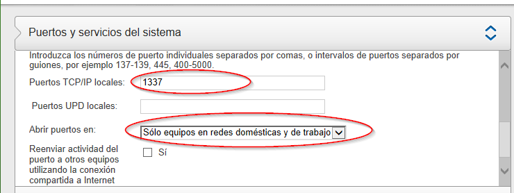
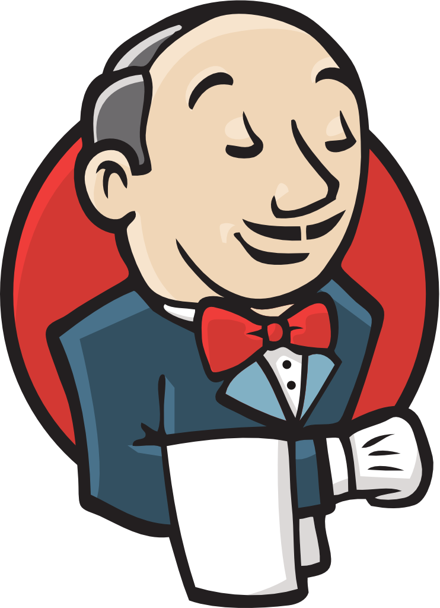

Profesionalización.workshop()

- Sergio Campos
- twitter: @chech0x
- e-mail: scampos@klabs.cl
- github: https://github.com/chech0x
Requisitos
- Docker Instalado
- Cygwin instalado con XWin y funcionando
- Curso Platzi Docker
- Curso Platzi Git
- Cliente REST (extensión chrome Advanced REST client)
klabs/sails-developer

- FROM: klabs/sails:v1.0
- +atom
- +jdk
- +eclipse neon
Sails, Capas y MVC

Sails es un framework 100% JavaScript
- Facilita la construcción de aplicciones Node.js de nivel empresarial
- Diseñado para emular el patrón MVC de frameworks como Ruby on Rails
- APIs orientada a datos con una arquitectura de servicios escalable
- ORM: Waterline. Provee una capa de acceso a datos simple, sin importar que base de datos use
- Tiene especificaciones que ayudan a levantar el backend REST de una app sin escribir código
- Especialmente útil para construir aplicaciones reactivas o cercanas a tiempo real
Patrón MVC (model-view-controller)
Es un Patrón de Arquitectura- Martin Fowler lo clasifica como un patrón de Presentación Separada.
- Aisla el comportamiento visual de la lógica del dominio y de la fuente de datos
- La presentación (Vista) no conoce referencias del modelo
- El modelo mantiene la lógica de del dominio de la aplicación (reglas de negocio)
- El controlador accede al modelo vía comandos y actualiza la vista con las respuestas de este.
 * en el caso de que todo ejecute en el mismo ambiente (ej: browser), se suele usar doble binding
* en el caso de que todo ejecute en el mismo ambiente (ej: browser), se suele usar doble binding
Layering / n-Capas
- Nace con las Arquitecturas cliente-servidor.
- Las funciones de presentación, dominio y adminstración datos están separadas físicamente
- Permite crear aplicaciones flexibles y reusables
- Se pueden implementar distintas presentaciones sin afectar el comportamiento de las otras capas.
- Ajusta ámbito en donde se realizan los cambios, aun cuando afecte varias capas, es más fácil enfocarse en una a la vez
- La división puede ser a nivel de bibliotecas y/o servicios, pero no es mandatorio
- Modularizar por capas sólo es útil en aplicaciones pequeñas.
README.md
Formato Markdown- Título
- Descripción del Proyecto
- Requisitos
- Build (¿jenkins?)
- Cómo se instala y/o Cómo se ejecuta
- Testing
- Uso
- Features / plugins
- Última versión Estable
- Screenshots
- Proyecto Kanban (Trello/Wekan)
- Colaboradores / Equipo
- Licencia

Corriendo el Proyecto por Primera Vez
Mapeo de Puertos
Firewall
Si queremos acceder al puerto a través de la ip de la red local debemos abrirlo en el firewall.

Dependencias de testing
Dentro del contenedor instalar mocha, chai, y sails-memory (--save-dev modificará el archivo package.json)
npm install --save-dev mocha --no-bin-links
npm install --save-dev chai --no-bin-links
npm install --save-dev sails-memory --no-bin-links
migrate:'alter'
Luego de esto podemos generar nuevos controllers y models (o modificarlos), sin que de problemas para subir la aplicación. Esta característica no es recomendable en producción
Persistencia en memoria para testing
Editar el archivo connections.js dentro de <proyecto>/config agregándo la configuración de base de datos memory a continuación de la configuración de localDiskDb, dentro de module.exports.connection
localDiskDb: {
adapter: 'sails-disk'
},
memory: {
adapter: 'sails-memory'
},
CI con Jenkins
Nuestro nuevo proyecto en Jenkins
- New Item (Nueva Tarea)
- Enter a new item name
- toDoDemo<miUsuario>
- Freestyle project (Crear un proyecto de estilo libre)
- Ok
- GitLab connection
- KuvaszGit
- Source Code Management (Configurar el origen del código fuente)
- Git
- Repository URL
-
- http://git.kvz.local/.....git
- Branch Specifier
- */master
- Build (Ejecutar)
- Add build step (añadir un nuevo paso)
- Execute Shell (Ejecutar linea de comandos (shell))
- Execute Shell (Ejecutar linea de comandos (shell))
- Command (Comando)
- Save (Guardar)
npm install
npm test
El primer build
- ¿Cuál fue la salida del build #1? Console Output (Salida de consola)
- ¿Cuál es su estado?
Probar lo contrario
- Modifiquemos el comportamiento de TaskService
- Suba los cambios a su repositorio
- Haga un nuevo build del proyecto
Agregar el reporte al build
- en package.json, en el script de test modificar
- agregar -R xunit
- agregar --reporter-options output=test-reports.xml
node ./node_modules/mocha/bin/mocha -R xunit --reporter-options output=test-reports.xml test/bootstrap.test.js test/integration/**/*.test.js
- Publish JUnit test result report
- Test report XMLs
test-reports.xml
Cambios
Revisar los "Cambios" en un build (o en el proyecto completo) nos permite saber que commits pueden haber provocado un fail o cuales agregan valor en el nuevo buildK.I.S.S.
Keep it simple, stupid- Agregar código a un proyecto existente a menudo lo vuelve más complejo
- Las dependencias entre sistemas lo hacen más complejo y dificil de cambiar
- Borrar código no es destructivo si está en el control de versiones.
- Sencillo != fácil, que se el proyecto se vuelva complejo es fácil
- Normalmente la complejidad viene por no hacer la face de refactorizar
- Volvemos complejo el proyecto cuando nos queremos adelantar a todo
- Proyectos Pulpos
- ... nos lleva a nuestro siguiente principio
Y.A.G.N.I.
You Aren't Gonna Need It- Matenga despejado el sistema de cosas extras que espera serán usadas en el futuro.
- Sólo el 10% de las cosas extras son usadas alguna vez.
- Las funcionalidades extras siempre nos retrasarán y malgastarán nuestros recursos.
- Mantener el código listo para posibles cambios se hace a través de un diseño sencillo
- Evita adivinar futuros requerimientos y flexibilidad extra
- Concéntrate en los compromisos para hoy.
- YAGNI es una forma de referirse a Simple Design
DRY
Don't Repeat Yourself- También conocido como SPOT (Single Point of Truth)
- "Todo debería ser dicho una y solo una sola vez" (Kent Beck)
- El ejercicio de eliminar los duplicados es una poderosa forma de llegar a buenos diseños
Simple Design
Según Kent Beck- El código operacional y los tests transmiten completamente las intenciones del programador sobre tal código.
- No existe código duplicado.
- El sistema usa el menor número de clases.
- Es sistema usa el menor número de métodos.
Legibilidad y Comentarios
El código fuente es para humanos... Los comentarios también.- "La documentación es el código" ¿Lo hago con esa intención? Por esto se controlan las versiones del código fuente y no de los compilados
- Cuando refactorizamos (extract method) el objetivo es simplificar la lectura del código fuente
- No comente código para deshabilitarlo, si está en GIT, puede/debe eliminarlo libremente
- Los comentarios van sobre métodos/funciones y sobre instrucciones específicas
- Nombres de variables y funciones/metodos descriptivos, no estamos en COBOL
- Mientras más descriptivo el código, más fácil poder tomarse vacaciones
- Descripciones deben ser funcionales, no sintácticas
Agilidad
Historias de usuario
- Describe funcionalidad que será valiosa o para el usuario o para el comprador de un sistema de software.
- 3 componentes:
- Una descripción escrita.
- Conversaciones sobre la historia.
- Tests que determinen cuando la historia está completa.
- Funcional != Técnico
- Lo valioso para el usuario, no para el ingeniero
- Los usuario priorizan, el equipo estima el esfuerzo.
- No sirve: "El sistema se construirá en JAVA" si no estamos construyendo un API y nuestro usuario no es un desarrollador
- Historias grandes = Épicas (pueden divirse en historias más específicas)
- Tamaño ideal: Que pueda ser codificada entre medio día y 2 semanas, por uno o dos programadores.
- Los acuerdos son documentados con Tests.
Historias de usuario
- Es mejor tener varias historia que historias muy grandes
- Un usuario puede buscar una oferta de trabajo
- Un usuario puede buscar una oferta de trabajo por ciudad
- Un usuario puede buscar una oferta de trabajo por area de especialidad
- Un usuario puede buscar una oferta de trabajo por salario
Deben ser:
- Independientes (auto-contenidas)
- Negociables (hasta que formen parte de una iteración)
- Estimables (debe poder determinarse su tamaño)
- Escalables (deben ser pequeñas para poder planificar)
- Testeables (la info necesaria para construir los test)
Estimaciones
Póquer- Cada participante de la reunión tiene un juego de cartas
- Cada historia se estima por separado
- Cuando todos han hecho su selección, se muestran boca arriba
- El equipo debe llegar a una decision por consentimiento (cuando nadie se opone, a diferencia del consenso, donde todos deberían estár de acuerdo)
- Si la estimación resulta “infinito”, la tarea debe dividirse en sub-tareas de menor tamaño
- Las tareas prorizadas para la iteración no deben sobrepasar la capacidad del equipo
Velocidad del Equipo
- Se definen sprints (ventanas de tiempo)
- Se estima una cantidad de puntos que el equipo puede realizar en ese sprint
- Se acomodan las historias de usuario, priorizadas, y que sumen una cantidad de puntos lo más cercana a la cantidad de puntos para el sprint
- Una vez terminado el sprint se evalúa si el equipo pudo terminar todas las historias
- Si sobró o faltó tiempo se ajusta la cantidad de puntos para el próximo sprint
- La cantidad de puntos que un equipo es capaz de completar en un spring es la velocidad del equipo
Contenedor Backend Service
Tarea
Documente en Gitlab-Wiki
Formato Markdown- Página Home.
- Téconología utilizada en el proyecto To-Do.
- 2 páginas a su elección que reflejen tópicos aprendidos en este curso.
Deploy en Talka
Talka
- Es un ecosistema de tipo Server-Less.
- Una filosofía de desarrollo orientado a contendores.Applicaciones Autocontenidas
- Mas Dev que Ops.
- Escalamiento Automatizado de aplicaciones.
Herramientas de Gestión
wekan.talka.kvz.local/
- Administración Visual de Features y Tareas (micro y macro)
- Permite Diseñar un flujo adhoc a cada proyecto.
- Ejemplo: [BackLog, Para Hacer, Haciendo, Pruebas, Terminado]
- Nos permite compartir información, asignarle a alguien específico.
- Nos da una panorámica instantánea del estado del proyecto.
- Lo usaremos como una herramienta de colaboración entre integrantes del equipo de desarrollo.
Gitlab Issues
git.kvz.local/
Gitlab Issues
- Propio de un proyecto en Gitlab.
- Surge el rol de usuario owner (que aprueba cambios sobre un repositorio)
- Surge el rol de usuario master (que puede crear repositorios en un equipo)
- Nos permite gestionar issues propios del código, proponer merge de una rama al master, definir hitos (milestones) de releases.
- Lo usaremos como una herramienta de control del ciclo de vida de las aplicaciones a nivel de proyectos.
Mantis
http://bugtracker.kvz.cl/
Mantis
- Permite gestionar tickets con los clientes y asignarlos con el (los) encargados de atención (QA, desarrollo).
- Lo usaremos como una herramienta de comunicación entre cliente/proveedor.
(Odoo)
http://openerp.kvz.local/
(Odoo)
- Permite gestionar proyectos y tareas un contexto comercial.
- Lo usaremos para asignación de proyectos y tareas (macro), y para llevar el registro de horas.